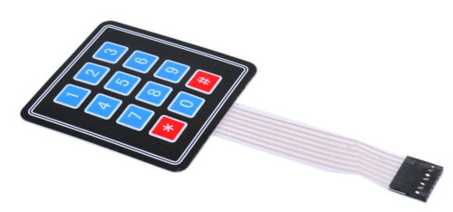
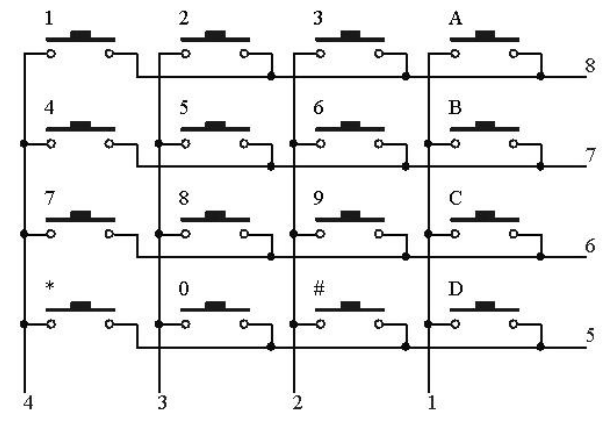
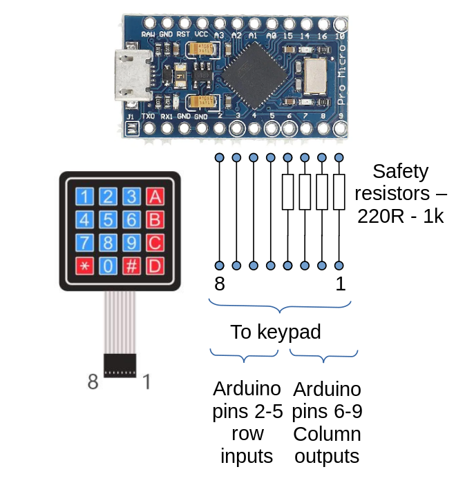

Building and programming a USB keypad from the ground up
This article is about the very basics of custom keyboard design. Designing custom mechanical keyboards has become a popular, if still niche, activity. Enthusiasts argue about the merits of particular keycap profiles and contact lubricants; but reading from a pushbutton keypad is a central part of many, more prosaic applications.
I'll be explaining, in detail, how to make a USB keypad for a computer from a cheap, 4x4 membrane keypad like this one:

and a SparkFun Pro Micro microcontroller board, plus a few resistors and some wire.
Accompanying the simple hardware design is software that I've written for the Pro Micro specifically for this article, but which could be expanded to support a more elaborate keypad. I won't be listing the software in detail (it is available in my GitHub repository), but I will be explaining how it works, how to compile it, and how to upload it to the microcontroller board. I'll also be explaining the principle of keyboard matrix scanning in depth.
Note:
Cheap membrane keypads are widely available, but be careful to check the wiring. A 4x4 keypad will always have four "row" connections and four "column" connections, but their arrangement in the connection block might be different from the part I'm using. Ideally, the device will be supplied with a circuit diagram.
Microcontrollers and the Pro Micro
Most custom keyboards are based on a programmable microcontroller, and many other microcontroller applications will use a keyboard or keypad of some kind.
A microcontroller is a device that executes a specific program, which is "flashed" to its storage. Microcontrollers generally have a number of digital, and perhaps analogue, input and output pins, and perhaps more specialized interfaces as well. Microcontroller boards integrate a microcontroller chip with enough additional components to make a working system -- usually a clock circuit, power supply regulator, and connections to a programmer. The SparkFun Pro Micro board is widely used in custom keyboards for at least three reasons. First, it's not much larger than a postage stamp. Second, it has a built-in USB port, which can be controlled by user code, as well as used for uploading code. Third, it's dirt cheap.
Among experimenters and custom builders, the microcontroller of choice has become the Arduino. This is an open-source family of boards based on the Atmel ATMega range of microcontroller chips. Arduino was originally designed for education, and can be programmed without specialist tools. It has a reasonably solid interactive development tool, and a set of useful libraries.
The Pro Micro is not an Arduino, but it is Arduino-compatible in that it can be used with the same development tools and the same libraries. There are a number of specialized derivatives of the Pro Micro, that are claimed to be more robust. These provide a USB-C connection rather than the old-fashioned micro-USB of the original. However, although the original Pro Micro is widely available, the fancier versions are less prevalent, and considerably more expensive. Nothing in this simple example requires a particular Pro Micro; in fact, it should work on any Arduino-like board with a USB port.
Of the many programming languages available for full-sized computers, microcontrollers are almost always programmed in C. The Arduino integrated development environment (IDE) will take a C program, compile it to machine code, and upload it to the controller board. Experienced C programmers, particular those who work in the Linux environment, may prefer to use more traditional development methods, as I describe in this article.
Key matrix scanning -- what it is, and how it works
A microcontroller IC will have a particular number of input/output pins. Even a physically large device, however, will not have enough inputs to assign a keyswitch to each one -- however much easier that would make the programming. In practice, all keyboards and keypads are designed to use key matrix scanning.
With matrix scanning, the keys are arranged in a matrix (grid), such that each keyswitch can connect, when it is pressed, a specific row to a specific column. The matrix arrangement of the simple 4x4 keypad I'm using for this example is shown in the diagram below. The column wires are connected to pin numbers 1-4, and the rows to pins 5-8, of the keypad's terminal block.

Key matrix scanning can be column-driven or row-driven. In column-driven scanning, the controller applies a voltage to each column in turn, and measures the voltage on each of the rows. If the row voltage matches the column voltage, then the switch that links the row and the column is assumed to be closed. Since each switch links a particular row and a particular column, which switches are closed can be determined by comparing the row and column voltages.
Row-driven scanning is exactly the same, except that the voltage is applied to each row in turn, and the voltage measured at the columns. All this means in practice is that in column-driven scanning, the columns are connected to controller outputs, while the rows are connected to controller inputs. With row-driven scanning, it's the other way around. The choice whether to use column-driven scanning or row-driven scanning might be determined by the number of inputs and outputs the controller has. In practice, though, most modern microcontrollers have pins that are selectable as inputs or outputs, so the choice isn't really that significant, and both designs are widespread. The simple design I describe in this article uses column-driven scanning, for no particular reason.
Matrix scanning works because the controller can scan the entire matrix much faster than typing speed. Suitable scanning speeds are not difficult to achieve with modern microcontrollers, but it's still necessary to pay some attention to the efficiency of programming. The whole matrix has to be scanned, and the necessary actions taken, much faster than the time it takes to press and release a key.
The controller's digital output pins apply a discrete "high" or "low" voltage, controlled by software. The "high" voltage is usually close to the positive supply voltage, while the "low" voltage is usually close to the negative supply voltage. The exact voltages are not important in a key matrix, because the input pins are only ever connected to the output pins of the same controller.
In the key matrix show above, when a switch is pressed the input voltage on the row will be the same as the output voltage applied to the column. But what happens if no key is pressed? In practice, the input pin will drift toward "high" or a "low", but in a rather unpredictable way. Consequently, we need connect a resistor between each input line and one of the supply voltages, to make the input predictable when no switch is closed. If the resistor is connected to the positive supply, it is called a pull-up; a resistor to the negative supply is called a pull-down. We can add these resistors to the circuit, but it turns out that the Pro Micro has built in pull-up resistors, which can be enabled in software. However, it has no built-in pull-down resistors, which influences how the microcontroller software will work.
With pull-ups, a row that has no switch closed will read a "high" level, which we usually denote by a binary number 1. This means that we must scan the columns by setting each output pin low in turn. when a switch is pressed, the low voltage of the output pin is registered as a low voltage on the input pin, overcoming the pull-up resistor.
The number of keys that a controller can scan depends on the number of input and output pins it has. The Pro Micro, with 18 pins that can be selected as either input or output, could handle a 12x6 matrix. With a bit of extra hardware the capacity can be increased more-or-less indefinitely.
One problem that affects all keyswitches is contact bounce. When a switch is pressed or release, its on/off state can change very rapidly several times before it settles. We don't notice that effect with, for example, domestic light switches, because it's all over in a millisecond or so -- far to quick to see. However, a millisecond is an age to a microcontroller, and contact bounce is an irritation. It's possible to de-bounce switches in hardware using timing or signal-shaping circuits but, in practice, most keyboard designers now prefer to use software, to keep the cost down. Again, it is the great speed of the microcontroller that makes it tractable to perform the necessary timing calculations in software.
In my example software I use a simple method of contact debouncing based on timeouts. Debouncing is by far the most complicated part of the implementation, and I've also provided a version of the software with no debouncing, that might be easier to follow for non-programmers.
One final point about keyboard hardware: most good-quality keyboards (but not a membrane keypad from eBay) have diodes in series with each keyswitch. The diode prevents current from flowing out of one output pin, and into another, when multiple switches are closed at the same time. My hardware design has no diodes and, while the "safety resistors" (see below) prevent this situation from causing damage, proper operation cannot be guaranteed when multiple switches are pressed at the same time.
Wiring the keypad to the microcontroller
The diagram below shows how I've wired the keypad connections to the microcontroller. Controller pins 2-5 (as they are labelled on the controller board) will be configured as inputs, and connected to the rows of the keypad. Controller pins 6-9 are configured as outputs, and connected to the columns. When I expand this design to a full-sized keyboard then, of course, I'll need to use more outputs and probably more inputs.
I've connected a small resistor in series with each of the output pins. This won't affect normal operation at all, but offers some protection to the controller if it is wired or programmed incorrectly. Setting two controller pins as outputs, and connecting them together, will likely destroy the controller, unless there is some resistance to limit current flow. The value of this resistance is not critical -- anything larger than about 200 ohms will be fine. If they are too large (hundreds of kilohms), then the inputs are likely to be affected by electrical noise when none of the keyswitches is closed.
I haven't made my choice of controller pins on any sophisticated technical grounds -- I've just picked eight pins that are close together on the board, to make them easy to wire. For experimental purposes we can put the microcontroller, resistors, and keyswitch wiring on a solderless breadboard, which shouldn't take more than ten minutes.

Uploading software to the Pro Micro
I'll describe uploading the software to the board first, because many
builders of custom keyboards use pre-compiled software. I'll explain
how how to compile the source code later.
In my GitHub repository there is a pre-compiled binary
binaries/keytest.hex, which should work with a
keypad wired as I described above.
Uploading a hex file
If you have Arduino software in the form of a hex file, you'll need a
tool to upload it to the board. Most people use avrdude
for this, although there are alternatives. avrdude is a
command-line utility, although there are various graphical wrappers
for it, including the Arduino IDE itself. The usual way to invoke
avrdude on the command line is like this:
avrdude -v -p atmega32u4 -c avr109 -P /dev/ttyACM0 -b 57600
-D -U flash:w:keytest.hex:i
atmega32u4 is the type of microcontroller chip in the
Pro Micro; avr109 is a reference to the board programming
method; -b 57600 is the communications baud rate, and
-P denotes the communications port. The "/dev" names
are used by Linux; in the Windows
world, the name will probably be something like "COM4".
The -U switch has four parts: flash --
perform an operation on flash memory; w -- write it;
keytest.hex -- the file to upload; i --
upload in Intel hex format.
avrdude -- and any other upload method -- will only work
if the board is receptive, that is, it is in "bootloader" mode. In this
mode, the board reads program code over the USB connection. Once
the program starts to run, the board is no longer in bootloader mode,
and won't accept an upload.
The definitive way to put the Pro Micro board back into bootloader mode is to short the GND and RST pins together, twice in quick succession. In fact, during development and testing, I solder a small pushbutton between these two pins to make this easy.
If the software running on the board is based on the standard Arduino USB library (mine is), then a nicer way to enter bootloader mode is temporarily to switch the USB interface to 1200 baud. The library software is designed to recognize this change, and switch immediately to bootloader mode. This is how the Arduino IDE switches to bootloader mode when you select the "Upload" menu. Outside of the IDE, you can get the same effect on a Linux system by running:
$ stty -F /dev/ttyACM0 speed 1200 $ sleep 1 $ stty -F /dev/ttyACM0 speed 57600 $ sleep 0.25 $ avrdude ....
I'm sure there's a way to get the same effect on a Windows system -- apart from using the Arduino IDE -- but I'm afraid I don't know what it is.
Writing and compiling keyboard software
Unless you're using a keyboard design for which software is already available, you'll have to write your own program, perhaps based on an existing design. Implementing a basic keyboard scanner in C is not difficult, if you have some experience of C programming. The version of my software that does not include contact debouncing is only about twenty lines of C. That's because the really difficult part -- manipulating the USB interface -- is handled by an Arduino library.
For a simple program like this, it's easy enough to use the Arduino
IDE tool to write and test the code, although I wouldn't use it for
a substantial program. A program created using the IDE is called a
"sketch", although I have no idea why. If you want to try my source
code in the IDE, just create a new sketch, the select "Add file..."
and specify the location of keytest.cpp. You'll need
to use the menus to add the Arduino Keyboard library
to the sketch (Sketch | Libraries | Manage Libraries...). Then
you should just be able to hit the "Upload" command to compile
and upload the program. You might need to use the RST method
to put the Pro Micro board into bootloader mode,
if it's completely hosed.
About the sample software
The Arduino libraries make it easy to implement a USB keyboard. Sending a keystroke to the host computer using C code is as easy as this:
#include "Keyboard.h"
...
Keyboard.begin();
...
Keyboard.press ('x');
Keyboard.release ('x');
The function loop() in my C program implements the main
scanning loop. It loops over every column, setting the
column output pin low. Inside this, outer loop it loops further
over the rows,
reading the level of each row pin. If a specific row/column combination
leads to a zero value being read, then the switch at that row/column
intersection is closed; otherwise it is open.
What we do with the information whether a switch is open or closed
is, essentially, what distinguishes a sophisticated implementation
from a stupid one. A simple approach is to store the last
open/closed state for each switch. When the value read by scanning
differs from the stored value, we assume that the switch has
changed from open to closed, or vice versa. On an open-to-closed
transition we call Keyboard.press(...), while on
a closed-to-open transition we call Keyboard.release(...).
This simple method is the one I've implemented inkeytest.cpp.no_debounce. It works well enough for a membrane keypad, whose switches
are not very bouncy, but is no good for real keyswitches.
keytest.cpp is a more complete implementation, with
contact debouncing. In this version, I don't just store the
open/closed state of each switch, but a number representing the state
of the switch in a finite-state model. This version also has to store,
for each switch, a numeric value indicating how long the program must
wait before accepting new events for that switch. The debouncing
logic is fairly complicated, compared to the simple implementation.
In practice, there's no way (that I know of) to calculate the operational parameters of the debouncing algorithm -- different keyswitches have different bounce profiles. A fast, light switch might bounce several times in a few milliseconds, while a more deliberate action may only bounce once or twice over ten times that long. If we make the debouncing logical too aggressive, we run the risk of excluding genuine rapid key-presses, along with contact bounces. There are many debouncing algorithms in use, and I'm not suggesting my relatively simply one is adequate for a full-size, fast-action keyboard.
The program code is well-documented, I think and, if you have an interest in the implementation, it's probably as useful to look at the actual code, than for me to try to explain it in any more detail.
Closing remarks
In this article, I've tried to explain the low-level detail of keyboard design, by presenting a limited, but functional implementation. My example uses the same microcontroller that many full-scale custom keyboards use, and it is programmed in the same way. In a later article, I'll explain how to expand this design into a real keyboard.